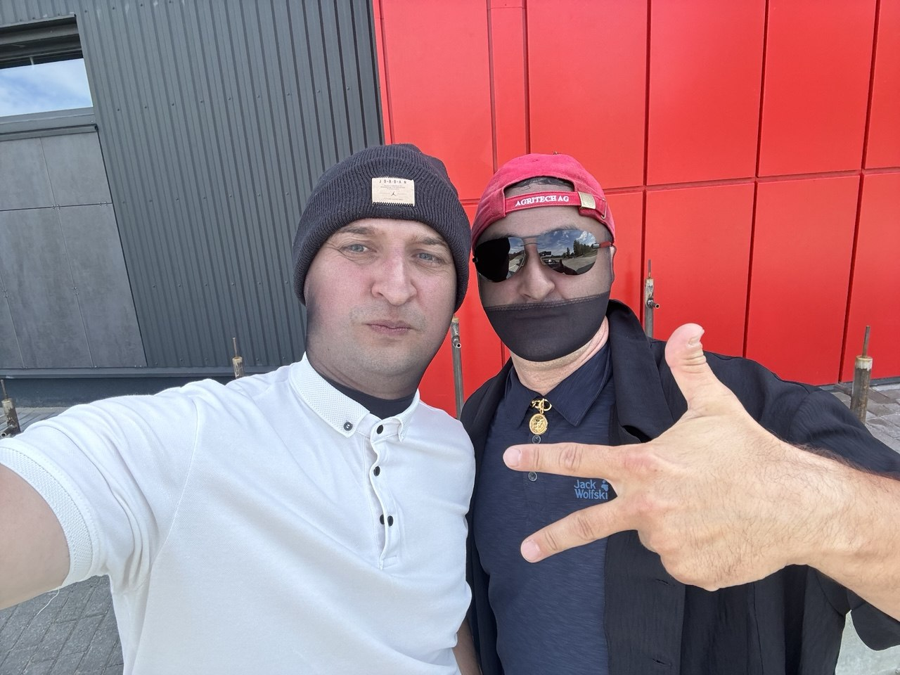
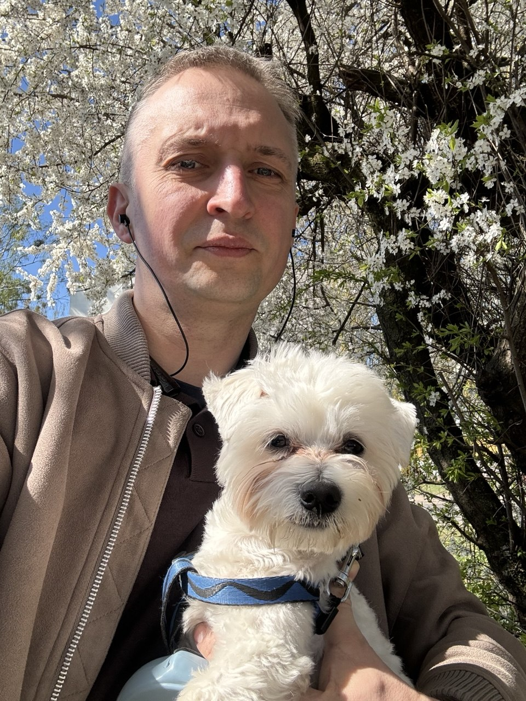

Обо мне
Меня зовут Сергей Прокопик, мне 43 года. Я директор предприятия ООО «ПНД Групп».
Много читаю — в основном нон-фикшн: книги по психологии помогают лучше понимать людей, а по менеджменту — выстраивать процессы в компании так, чтобы команда работала слаженно, а не через силу. Отдельно интересуюсь темой продаж: как строить воронку, вести переговоры и растить в людях навык продавать — без этого не работает ни один бизнес, каким бы сильным ни был продукт. Спорт держу как обязательную часть рабочего ритма: регулярные тренировки помогают восстанавливать энергию и оставаться собранным при высокой нагрузке.
Чем занимаюсь
Моя работа как директора ООО «ПНД Групп» строится вокруг двух ключевых направлений — управления производством и управления продажами. Эти процессы должны работать синхронно: производство без сбыта превращается в склад, а продажи без стабильного производства — в невыполнимые обещания клиентам.
Управление производством
Планирование загрузки мощностей, контроль качества на каждом этапе, устранение узких мест и снижение издержек без потери в качестве.

Управление продажами
Воронка, стандарты переговоров, система мотивации менеджеров — контроль конверсии на каждом этапе сделки.
Как это связано
Любое изменение в производстве оцениваю с точки зрения обещаний отдела продаж — и наоборот. Опираюсь на менеджмент и психологию.
Интересные факты

Результат — это не про везение, а про систему: понятные процессы, сильная команда и дисциплина, которая не зависит от настроения. Сергей Прокопик